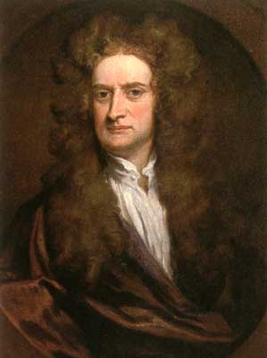

Исаак Ньютон (Isaac Newton)
был величайшим ученым в истории.
Его работы заложили основы научного стиля
в исследовании явлений природы.
Главные открытия: теория движения,
понимание природы света, гравитации, свойств материи
